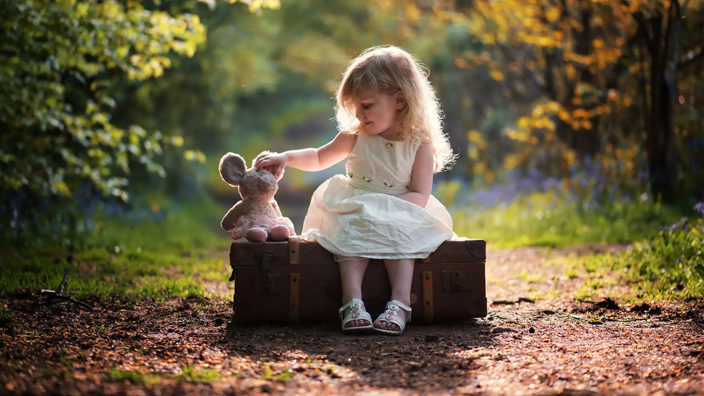

Персональный сайт воспитателя детского сада Суржик Ольга Викторовна
 Многое зависит от того, кто вел ребенка в детский сад, что вошло в его разум и сердце из окружающего мира, - это и определяет, каким человеком станет сегодняшний малыш. Ориентиром для ребенка является взрослый, в данном случае воспитатель».